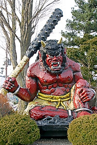
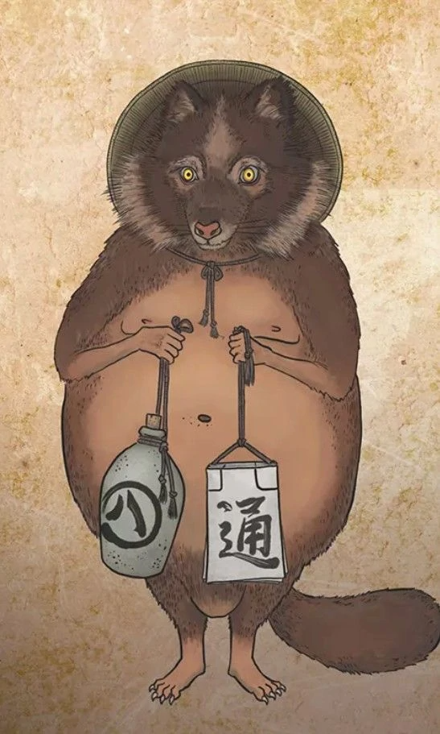
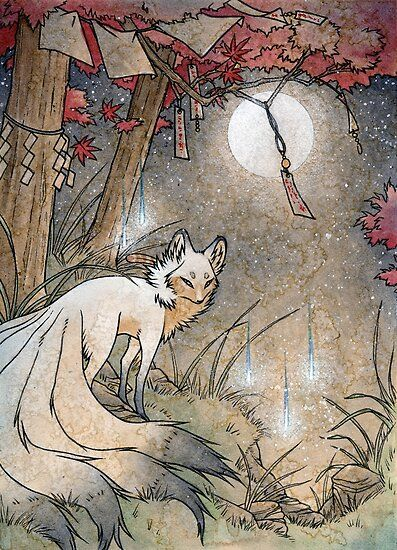
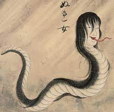
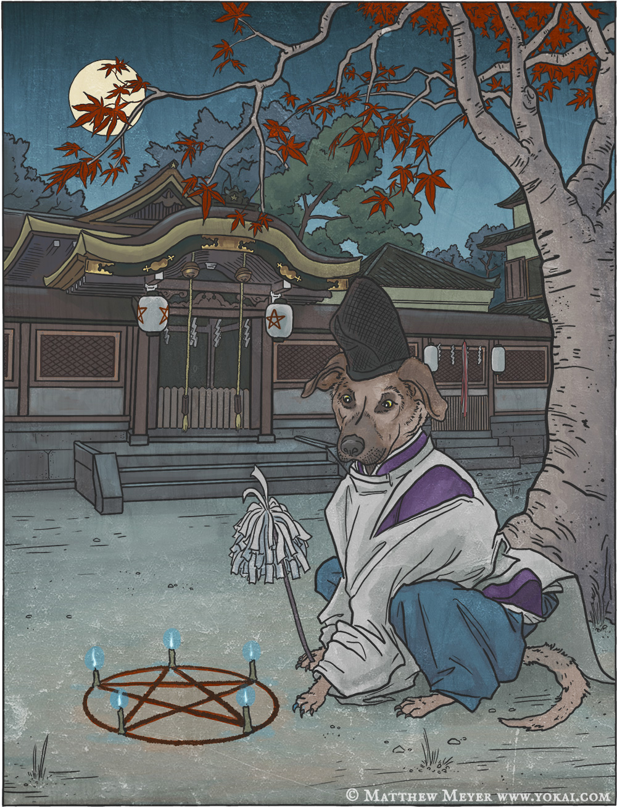

Los Oni (鬼) son un tipo de yokai del folclore japonés, traducido
como demonios, diablos, ogros o troles. Son personajes populares en el
arte, literatura y teatro japonés.
Las representaciones de oni varían mucho, pero normalmente se muestran criaturas gigantescas y
horrendas con aspecto de ogros pero con garras afiladas,
pelo despeinado y dos largos cuernos surgiendo de sus cabezas. Son
mayoritariamente humanoides, pero se muestran con rasgos no naturales,
como un número extraño de ojos o dedos adicionales.
Su piel puede ser de cualquier color,siendo el azul y el rojo los más comunes.

Suelen representarse vistiendo taparrabos de piel de tigre y portando
garrotes de hierro llamados kanabō (金棒). La imagen lleva a la expresión
"oni con un garrote de hierro" (鬼に金棒 oni-ni-kanabō), es decir, ser invencible
o imbatible.
También puede usarse en el sentido de "más allá del más fuerte", o
tener una cualidad natural mejorada o suplementada por el uso de una herramienta.
Además, puede significar excederse, ser innecesariamente fuerte o poderoso.
Otra fuente de la imagen del oni es el concepto de China y Onmyōdō. La dirección noreste se refirió como el kimon (鬼門, "puerta demoniaca") y se consideraba una dirección desafortunada por la que pasaban los espíritus malignos. Basándose en la asignación de los doce animales del zodiaco a las direcciones cardinales, el kimon también era conocido como ushitora (丑寅), o dirección "Tigre buey", y los cuernos bovinos, las garras y colmillos gatunos y el taparrabos de piel de tigre del oni eran una representación visual de este término. Los templos se suelen construir mirando a esa dirección, y los edificios japoneses en ocasiones tienen hendiduras en forma de L al noreste para alejar al oni. Enryakuji, en el monte Hiei al noreste del centro de Kyoto, y Kaneiji, en esa dirección del castillo Edo, son algunos ejemplos. La propia capital japonesa se desplazó al noreste de Nagaoka a Kyoto en el siglo VIII.
| Tipos de Onis | |||||||
|---|---|---|---|---|---|---|---|
| Tanuki |  | Son una especie de yōkai que se encuentran en los clásicos y en el folclore y las leyendas de varios lugares de Japón, comúnmente asociados con el perro mapache japonés o tanuki. | Kitsune |  | La palabra japonesa kitsune (狐) significa zorro, animal que constituye un elemento de singular importancia en el folclore japonés, hasta el punto en que dicha palabra se utiliza tradicionalmente para nombrar a aquel espíritu del bosque con forma de zorro, cuya función clásica es la de proteger bosques y aldeas. | ||
| Hebi |  | En muchas culturas del mundo la serpiente ha sido respetada como dios de los ríos y las montañas. Es el espíritu de numerosas lagunas y pantanos. En la mitología japonesa abundan las historias de serpientes que se transforman en bellas mujeres y se entremezclan con los humanos. | Inugami |  | En la mitología japonesa, un inugami es una forma de utilizar un Espíritu Animal, comúnmente originado de un perro, para llevar a cabo una venganza o actuando como guardianes a favor de su Inugami-mochi. Los inugami son una variedad de hechicería llamada Kojyutsu, la cual se ha prohibido su uso en la era de Heian | ||